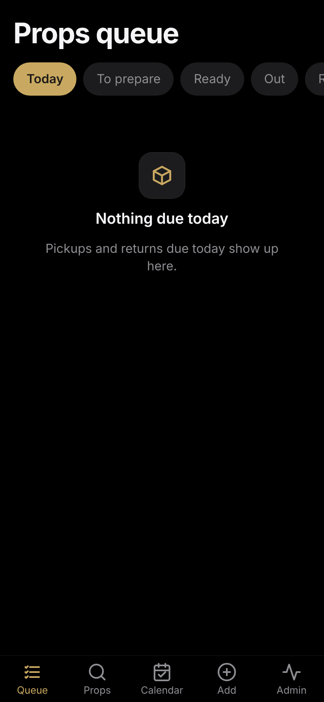
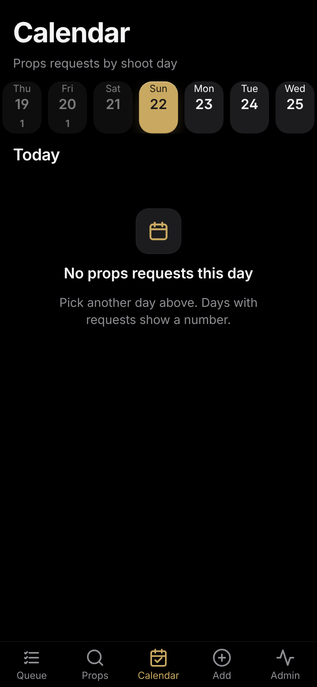
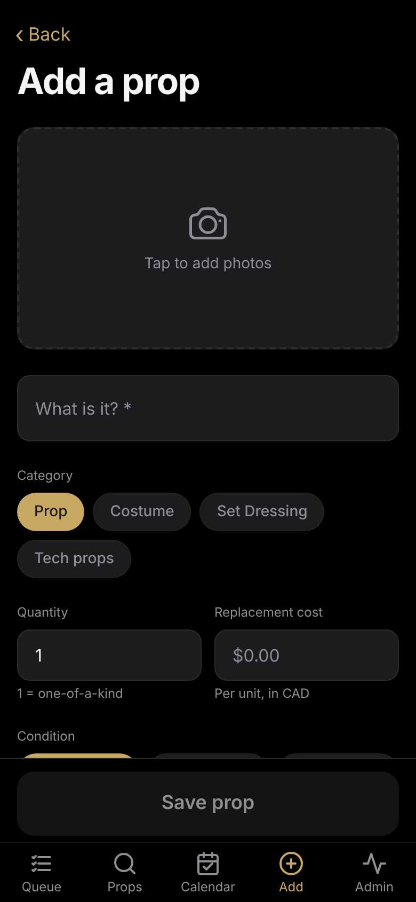
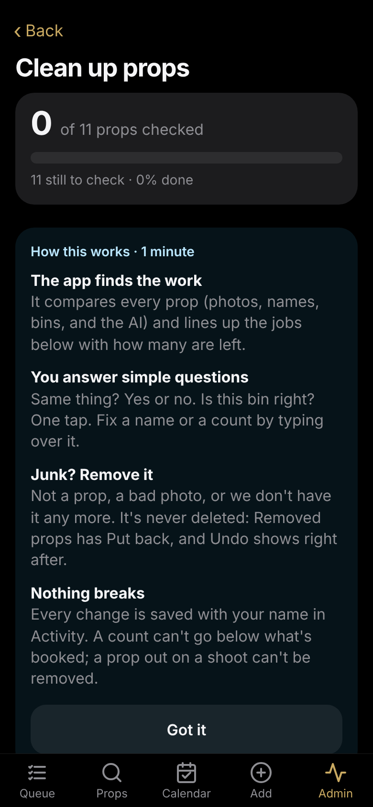
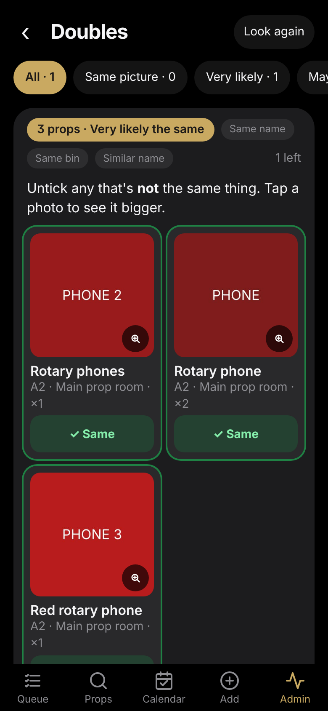
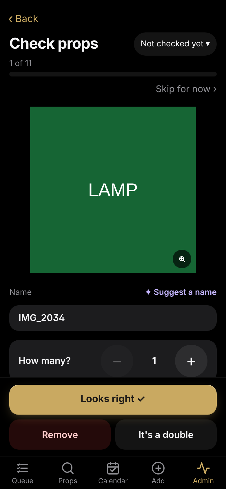
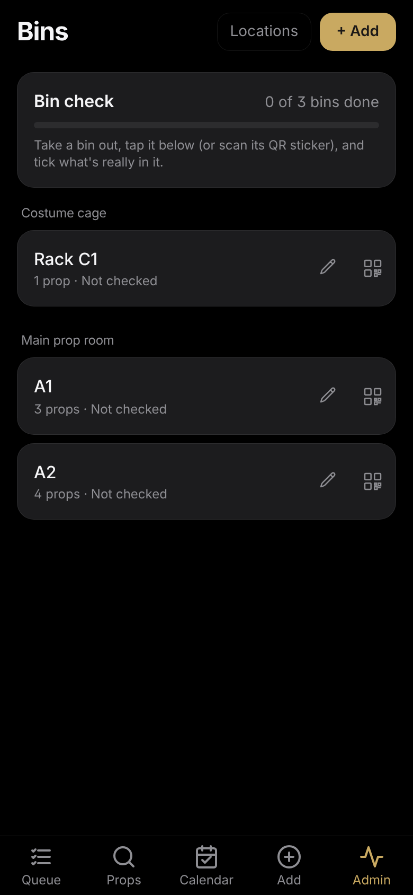
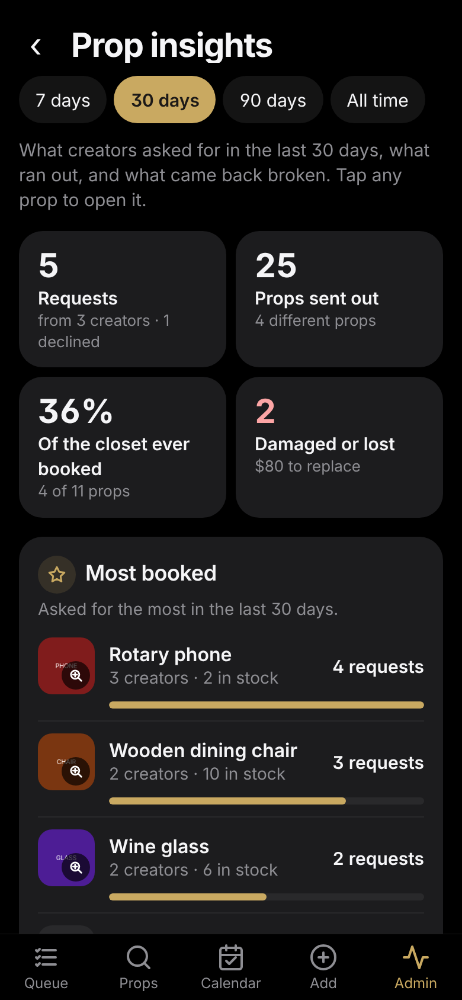
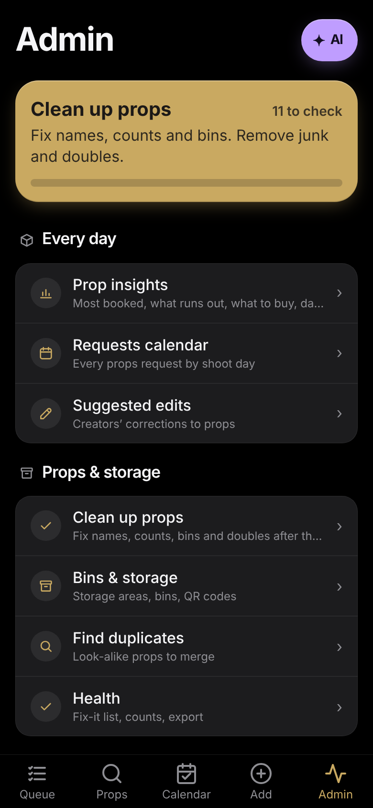

Find the job in front of you, follow the steps. Every section works on its own, so you never need to read this front to back. Search for a word, or jump from the contents below.
Updated Nov 23, 2026proptracker.arbcreative.coFor the arts department
See what needs doing
The Props queue is your home screen. Every props request a creator sends lands here, sorted by what needs you next.
I want to…
See what I need to deal with today
The app opens on the Props queue. Its first tab, Today, shows the pickups due today (or overdue) and the props due back today or late.
Tap Queue in the bottom bar (the app opens there anyway).
Stay on the Today tab. The number in brackets is how many requests need you.
Each card shows the request name, which shoot it's for (house or offsite place, day, hours, creator) and a line like "pickup tomorrow" or "Due back by 10 AM".
Tap a card to open the request.
Tip: "Nothing due today" means you're clear. Check To prepare next to get ahead on later shoots.

The Props queue, Today tab
I want to understand…
What each queue tab means
A request moves from left to right through the tabs as you work on it. Swipe the tab row sideways to see them all.
Today: pickups due today or overdue, and props due back today or late.
To prepare: new requests and ones you've started picking. Your main to-do list.
Ready: packed and waiting for the creator to sign for them.
Out: the creator has them. Late ones are marked in red.
Returns: the creator brought them back with a photo. They wait for you to check each prop in.
Done: checked in, declined or cancelled. Newest first.
I want to understand…
The coloured badges on a queue card
Badges tell you at a glance which requests need attention first.
Red ring around the card: the pickup is today or tomorrow and it isn't packed yet, or the props are late coming back.
Late: the props should have been back by 10 AM on the next open day after the shoot.
⚠ At risk (amber ring): one of the props may not be ready in time. See At-risk warnings.
⚠ Pickup issue: the creator said something was missing when they signed for it.
3/5 picked: how far along the picking is.
I want to…
See the details of one request (which shoot, when, who)
The top of every request shows the shoot it's for, so you know exactly when the props must be ready.
Tap the request in the queue.
The top line reads like "Cliff 1 · Sat, Nov 8 · 1–3 PM · Riley": the house (or offsite place), the day, the hours and the creator.
Read the progress line (Requested, Being picked, Packed, Picked up, Returned) and any "Notes from the creator".
Scroll to the bottom for the History: who did what, and when.
Tip: If the request isn't linked to a shoot, the app shows the creator's own shoot that day instead. If there's none, it says "no shoot time on the schedule".
I want to…
Plan ahead: see requests day by day
The Requests calendar shows every props request by shoot day, from a week back to six weeks ahead. Good for planning a busy week.
Tap Calendar in the bottom bar (or Admin → Requests calendar).
Swipe the day strip. The small number under a day is how many requests it has.
Tap a day to see its requests: creator, house, time, status and props.
Tap a request to open it.

Requests calendar
Pick and pack a request
From a new request to "Packed & ready for pickup": tick each prop as you pull it, deal with anything you can't find, take one photo, done.
I want to…
Pick the props for a request
The picking list is sorted by storage room, then bin, so you walk the shelves once.
Open the request from To prepare.
Under Picking list, each group starts with a gold pin line: the room and bin.
Pull the prop, then tap the square box next to it. It turns green with a ✓.
Ticked the wrong one? Tap the box again to untick it.
The bar at the top shows "3 of 5 done".
Tip: Tap a prop's photo to see it full size, with its name, room and bin along the bottom. Handy when two props look alike.
Tip: Ticks show instantly, and you can tick several rows in a row without waiting.
A prop isn't on the shelf…
Mark a prop "not available"
If you can't find a prop or it's broken, mark it not available with a reason. The creator sees the reason, and the rest of the request still goes out.
On the picking list, tap Can't find it / broken? under that prop.
Type a short reason the creator will understand (for example "Lamp shade is torn").
Tap Mark not available. The prop is crossed out and counts as done.
Watch out: This link disappears once a prop is ticked. Untick it first if you need it.
Tip: If the prop is really lost or broken, also fix it in the closet so nobody else books it: open the prop, tap Edit, and lower the count or set it to Damaged.
A creator asked for something we don't have…
Handle a custom prop (make or find)
Creators can ask for something that isn't in the closet. It shows in a violet section called To build or source, with a description, a quantity and sometimes a reference photo.
Read the request. Tap the reference photo to see it bigger.
Sort out the details and timing with the creator on Slack. The app tells them there is no guaranteed date.
Once you have it, tick the box next to it.
Can't do it? Tap Can't make it?, type why, and confirm with Mark not available. The creator sees "Can't be made: …".
Good to know: Creators have to ask for custom props at least 4 open days before the shoot (Sundays don't count), unless the owner or an admin changed that number. Props we already have close 48 hours before the shoot starts.
The pack photo is proof of what went out. Once you mark it packed, the creator is told it's ready.
Make sure every prop is ticked or marked not available. The line under the button tells you how many are left.
Under Photo of everything packed (required), take a photo of every prop together. Add more photos if it doesn't fit in one.
Optional: write a note for the creator (for example "Chairs are stacked by the door").
Tap Mark packed & ready for pickup. The request moves to Ready.
Watch out: Proof photos open the camera only. You can't pick an old photo from the gallery, so take it in the prop room.
I want to understand…
The date under proof photos
Pack, return and check-in photos show when they were taken, so nobody can reuse an old photo.
"Taken Nov 14, 2:14 PM": all good.
Red "⚠ Taken 3 days before upload": the photo is more than an hour older than when it was sent. Ask the person about it.
Amber "⚠ No date on this photo": the phone didn't save a date. Usually harmless.
We can't do this request at all…
Decline or cancel a request
Use this only when the whole request can't happen. For one missing prop, use not available instead. Possible until the creator picks it up.
Open the request and scroll to the bottom.
Tap Decline.
Type the reason (the creator sees it).
Tap Confirm. The props become free for other people.
Tip: There is also Cancel booking, for example when the creator told you they no longer need it.
I want to understand…
When a creator changes their request
Creators can change a request (add, remove, change how many) only while it is still Requested. Once you start picking, it's locked for them; they add a new request to the same shoot instead.
A change shows in the request's History as "Changed".
A second request for the same shoot shows as its own card in the queue.
Hand the props over
The creator signs for the props on their own phone. You only step in if they forget.
I want to understand…
How pickup works
When the request is packed, the creator who booked it opens it on their phone at pickup, checks the props and signs. Only that creator can sign.
The request sits in Ready with "Waiting for pickup".
The creator signs on their phone. The request moves to Out, with "Signed by … on … at …".
If they tapped "Something's missing", the card gets ⚠ Pickup issue and the request shows what they reported.
The creator took the props but didn't sign…
Mark it picked up for the creator
Stops requests getting stuck in Ready. It's saved as signed by you, not by them.
Open the request from Ready.
Tap They picked it up: mark it for them.
Check the creator really has the props, then tap Mark as picked up.
Watch out: Only do this if they already have the props. From then on the props count as theirs until they come back.
The creator reported something missing at pickup…
Deal with a pickup issue
Open the request with the ⚠ Pickup issue badge.
Read "Reported:" in the pickup box: which props, and their note.
Find the prop and get it to them, or sort it out with them on Slack.
If it's really lost, fix the prop: open it, Edit, lower the count.
Tip: The pack photo is your proof of what was in the bin when it left.
Returns and check-in
Creators bring the props back the night of the shoot with a photo. You check each prop in: fine, damaged or missing.
I want to…
See what's out and what's late
Props are due back the night of the shoot. They count as late from 10 AM on the next open day.
Open the Out tab. Late requests have a red Late badge.
Open one to see "Late: was due back by …".
Chase the creator (Slack or in person). Late creators can't book more props until it's back; the app blocks them by itself.
Props came back…
Check in a return
Every prop gets a result. That's what keeps the closet counts and conditions right.
Open the request from Returns.
Look at the creator's return photo ("How the creator left it") and compare it with the pack photos above.
For each prop tap ✓ Fine, Damaged or Missing. Damaged or missing needs a short note.
Optional: add check-in photos, especially of any damage.
Tap Complete check-in. The request moves to Done and the props are free for the next shoot.
Tip: The button stays grey until every prop has a result. The line under it says what's missing.
Something came back broken…
Record a damaged prop (and fix it later)
Tapping Damaged at check-in sets that prop's condition to Damaged. Creators can't book damaged props, and the damage goes on the creator's record.
At check-in, tap Damaged on the prop and write what happened.
Take a check-in photo of the damage.
Once it's repaired: open the prop, tap Edit, set Condition back to Good or Fair, save.
Tip: If the creator already said it was damaged when returning, you'll see "Damage reported: …" in the return box.
Something didn't come back…
Record a missing prop, and mark it found
Missing units stop being bookable until someone finds them, so nobody books a prop we don't have.
At check-in, tap Missing. If they had more than one, set How many missing? with − / +.
Write a short note and complete the check-in.
When it turns up, open the prop's page. It says "Not bookable until found."
Tap Found it: make bookable again.
The creator dropped props off but didn't do the return in the app…
Check in props that are still "Out"
You don't have to wait for the creator's return photo. You can check props in straight from the Out tab.
Open the request from Out.
Scroll to the check-in form and go through each prop as usual.
Add a check-in photo of what came back.
Tap Complete check-in. The request is marked "Returned without the creator's return photo".
We made something for a shoot and want to keep it…
Keep a custom prop in the closet
At check-in, custom props (make or find) can become real props in one tap.
In the check-in form, tick Add "…" (×N) to the inventory.
Complete the check-in.
The new prop has no photo yet, so it shows on the Health fix-it list. Open it, tap Edit, add a photo and a bin.
A request says "Some props might not be ready"…
Handle an at-risk warning
The app warns you (and the creator) when a prop booked for an upcoming shoot isn't back from the person before, came back damaged, or has units missing.
Open the request with the ⚠ At risk badge and read which prop and why.
Chase the late person, repair it, or find the missing unit.
If it really won't be ready, mark it not available with a reason so the creator knows in time.
When a shoot moves or disappears
Shoots move on the schedule all the time. The props request follows the shoot, so you rarely need to do anything, but here is what you'll see.
I got a "Props request moved" notification…
A request moved to another shoot or day
When a shoot moves, its props request moves with it. If the day changes, the request's date changes too.
The request's top line shows the new shoot, and its History says "Moved with the shoot".
A prop that isn't free on the new day is marked not available: "Booked by someone else on the new shoot day". Look for something similar or tell the creator.
If you already packed it, it stays packed for the new day.
A request says "The shoot for these props was taken off the calendar"…
The shoot was deleted but the props are still booked
If a shoot is deleted from the calendar, its props stay booked for that day on purpose. If a new shoot is booked for the same day, the props join it by themselves.
Wait, or ask the creator if they still need the props.
Not needed any more? Open the request and tap Cancel booking at the bottom.
A creator cancelled…
A creator cancelled their request
You get a notification and the request moves to Done as Cancelled. If you already pulled the props, put them back on the shelf. The props are free for others straight away.
Add and fix props
Keep the closet true: right name, right count, right bin, a good photo. Creators can only find what's in here.
We got something new…
Add a new prop (the AI fills it in)
Take a photo and the AI suggests the name, category, tags and description (marked ✦ AI). You check it and save.
Tap Add in the bottom bar.
Tap Tap to add photos and take a photo (add more angles if you like).
Wait a moment: the fields marked ✦ AI fill in. Fix anything that's off.
Set the Quantity, Replacement cost (per unit), Condition, Storage area and bin.
Optional: "Notes for creators" (everyone sees), "Internal notes (arts dept only)", extra search words (hidden, help search).
Tap Save Item.
Tip: Checking a bin and found something not in the app? Use It's not in the app → add it on the bin page: the bin is filled in for you. See Check a whole bin.

Add a prop
A prop is wrong…
Fix a prop's name, count, bin or photo
Find the prop: tap Props and search, or open it from a request.
Delete for good: only for imported props that were never booked. Can't be undone.
This prop is in the app twice…
Combine a double you just noticed
On the prop page, tap ⋯ → Find duplicates.
The app lists props that may be the same (same picture, look-alike, similar name, same bin). Tick the ones that are the same thing.
Tap Combine N with this one.
Pick which one to keep and, if they're in different bins, which bin they're really in.
Pick One prop, photographed N times (keeps the highest count) or We have N separate copies (adds the counts up).
Tip: Wrongly suggested? Tap Not same and it won't be suggested again. Props in a current booking can't be combined away until they're back.
This shouldn't be in the closet…
Remove a prop (and put it back)
Removing never deletes. The prop is hidden from search and kept in Removed props with Put back.
On the prop page, tap ⋯ → Remove this prop.
Pick why: same prop twice, not a prop, blurry or bad photo, we don't have it any more, or supplies.
Changed your mind straight away? Tap Undo at the top.
Later: Admin → Clean up props → Removed props → Put back, or open the prop and tap Restore.
Watch out: A prop in a current booking can't be removed until it's back.
I want to know…
Who had a prop, and who changed it
Open the prop and scroll down.
Tap Show history: "Who had it" (every request with it) and "Changes" (every edit, with who and when).
Tip: For everything at once, use Admin → Activity.
A creator sent a correction…
Apply or dismiss a suggested edit
Creators can tap "Something wrong? Suggest an edit" or "Wrong name?" on a prop. Their suggestions come to you.
Admin → Suggested edits (open suggestions also show on the prop page).
Read the message, the proposed changes and any photos.
Tap Apply changes to change the prop, or Dismiss… (you can add a reply).
Tip: The creator sees whether it was applied or dismissed.
Clean up the closet
Thousands of props came in from the photo import. Clean up props turns the tidy-up into simple yes/no questions. Nothing is ever deleted, and every change has your name on it.
I want to…
Start cleaning up, in the right order
The Clean up page shows how many props are checked, then the jobs in the order that saves the most time, each with how many are left.
Tap Admin, then the gold Clean up props card.
Read "How this works" once (one minute), tap Got it.
Under Do it in this order, work top to bottom: 1 Combine doubles, 2 Put props in their bin, 3 Quick approve, 4 Work bin by bin.
Good to know: "Checked" means someone confirmed the prop's name, count and bin.

Clean up props
Step 1…
Combine doubles
The app compares every prop and shows groups (2 to 10) that may be the same thing, most sure first: "Same picture", "Very likely", "Maybe".
Clean up props → Combine doubles.
All photos in a group start ticked "✓ Same". Untick any that is not the same thing. Tap a photo to see it bigger.
Tap Combine N.
Choose One prop, photographed N times (keeps the highest count) or We have N separate copies (adds them up). Tap Keep this one to choose which entry stays.
None alike? Tap None are the same. Not sure? Skip it.
Tip: The ✦ AI gives an opinion ("looks like the same thing" / "looks different"), but it never combines anything. Bulk buttons (exact same picture, or groups the AI is sure about) always show you the list first and wait for your "Yes".

A group of possible doubles
Step 2…
Put props in their bin
Some props have no bin, but their photo folder in Google Drive was named like a bin ("Bin A-02"). The app groups them by that bin.
Clean up props → Put props in their bin.
Look at the photos under each bin.
Tap Put them in A2 (one bin), or Put all N in their bins… and confirm the counts.
Step 3…
Quick approve props that already look right
Props with a real name, a bin and a photo (and no likely double) come up 30 at a time, all ticked green.
Clean up props → Quick approve.
Scan the photos and names. Untick any that look wrong (they wait for later). Tap a photo to fix that prop right there.
Tap Approve N ✓. The next 30 come up.
Step 4…
Work bin by bin
Take one bin off the shelf, see all its props on one screen, fix what's wrong, approve the rest.
Clean up props → Work bin by bin. Bins are in number order with a green bar; tap gold Next bin.
Tap any prop to fix it there: name (with ✦ Suggest a name), how many, bin, category, then Save. Or Remove / It's a double.
"X is here N times" at the top? Tap it to make it one prop.
When the rest is right, tap Everything here looks right ✓ (N), then Bin done ✓ · Next: ….
Watch out: Props with odd names (amber, like "IMG_2034") are never approved in bulk. Give them a real name first.
Lots of props are called "IMG_2034"…
Fix odd names with AI
Clean up props → Fix odd names with AI.
The AI looks at each photo and suggests a short name, 12 at a time.
Change any that are off, Skip any you're not sure about.
Tap Accept these N names.
Tip: If the AI is "resting" (the monthly AI budget is used up), type the names yourself. Everything else still works.
I want to…
Check props one at a time
One big photo per prop, in shelf order. Good for careful checking.
Clean up props → Check props one by one.
The pill at the top right picks which props: Not checked yet, No bin, Odd names, No photo, More than 1, Costumes, From the photo import, Everything, or one bin.
Fix the name, How many? (− / +) and Where is it? (Change).
Tap Looks right ✓ (it says Save ✓ if you changed something). The next prop comes up.
Or tap Remove, or It's a double to combine it with another prop. Skip for now and ‹ Previous are at the top.

Check props one by one
I want to change many props at once…
Use the Quick list
Clean up props → Quick list. Search, filter, or order by bin, A to Z or newest.
Tap a name to rename it (Enter saves). − / + changes the count (saves by itself).
Tick the boxes (or Pick all), then choose Move to bin, Category, Mark checked, Combine (2 to 20 props) or Remove.
Made a mistake? Undo shows at the top for a few seconds.
Someone removed the wrong prop…
Put a removed prop back
Clean up props → Removed props. Newest first, with why, who and when.
Tap Put back. It's back in the closet exactly as it was.
Copies of a prop are spread over different bins…
Gather look-alikes into one bin (Find duplicates)
The older Find duplicates screen can flag copies so the team physically moves them onto one shelf.
Admin → Find duplicates → tap Find duplicates to load the groups.
In a group, tap the photos that are the same prop.
Merge them (Copies / Same one), or tap Flag N to gather into one bin.
Open the To gather tab and tap Send this list to the team to text the move list.
Tip:⏸ Decide later puts a group on the Later tab.
I want to…
See what needs fixing, or download a spreadsheet
Admin → Health.
Work through the fix-it list (no photo, no bin…), look-alike tags and empty bins.
For a spreadsheet of every prop: Download spreadsheet. It opens in Excel or Google Sheets.
Bins, rooms and QR stickers
Every prop lives in a bin, and every bin is in a storage area (a room). The QR sticker on a bin opens its page.
I want to know…
Where a prop lives
Open the prop (search on Props). Its room and bin are on the page (creators don't see this).
Or tap its photo: the room and bin show along the bottom.
On a picking list, props are already grouped by room and bin.
I want to…
Add a bin or a storage area
Admin → Bins & storage.
New room first? Tap Locations and add it.
Tap + Add, type the bin name (for example "Bin 12"), pick its storage area, save.
To rename or move a bin, tap the pencil on its row.
Tip: Bins are listed in number order ("Bin 2" before "Bin 10"). "B.31", "B:31" and "B031" count as the same bin; the app offers to merge look-alike bins.

Bins & storage
I want to…
Print or save a bin's QR sticker
Admin → Bins & storage.
Tap the QR icon on the bin's row.
Tap Print. On iPhone the image opens instead: long-press it and choose Save to Photos.
Stick it on the bin. Scanning it with a phone camera opens that bin in the app.
Watch out: When two look-alike bins are merged, the extra bin's old sticker stops working. Use the kept bin's sticker.
I want to…
Check a whole bin against the app
Take a bin out, tick what's really in it. The Bins screen shows "N of M bins done".
Scan the bin's QR sticker (or tap the bin on Bins & storage).
Tap Check this bin.
For each prop, tap Here or Not here. Not here, but you know where it is? Tap I know where it is → set its bin.
Something in the bin that the app lists elsewhere? It's in the app → move it here, type its name, Move here.
Something not in the app at all? It's not in the app → add it.
Once every prop is ticked, tap Done ✓ · next: …. The next unchecked bin opens.
Tip: The bin check confirms where props are. To check names and counts in that bin too, tap Check names and counts in Clean up ›.
A prop was marked "Not here" during a bin check…
Find a home for props that "Need a bin"
Admin → Bins & storage. The amber box Needs a bin lists them with "Was in …".
Found it? Tap it → Set bin ›, pick the bin, save. Or use "move it here" while checking that bin.
Know your closet
Numbers to help you decide what to buy, what to put in grab-and-go, and who is hard on props. View only: nothing here changes anything.
I want to know…
Which props are most popular
Admin → Prop insights (first under Every day).
Pick 7 days, 30 days, 90 days or All time.
Top tiles: requests, props sent out, how much of the closet was ever booked, damaged or lost (with the replacement value).
Scroll to Most booked and Trending now (last 2 weeks against the 2 before). Tap a prop to open it.

Prop insights
I want to know…
What we should buy more of (or buy at all)
Often unavailable: props where every unit was booked on a shoot day, couldn't be found when packing, were in a declined request, or were wanted while booked out. "Buy another?" shows when it happened on 2+ days or 2+ creators wanted it.
Asked for, but we don't have it: custom requests grouped together. Your shopping ideas.
Never asked for: props nobody has requested (candidates to store away).
I want to know…
Which props could go on the grab-and-go shelf
Grab-and-go candidates in Prop insights: in the last 90 days, asked for 3 or more times by 2 or more creators, worth under $500, in good shape.
I want to know…
Who damages or loses props
Prop insights → Damaged the most and Missing after return (by the creator who booked it, from your check-ins).
Tap a name to see their props, then Open record for their full history.
Needs attention now lists props that are damaged or missing today.
Good to know: Strikes and pauses are given by admins and the owner, not by the arts department. Tell them if someone keeps breaking things.
I want to know…
Who did what, and when
Admin → Activity.
Every change to props and requests, newest first, with the person's name.
Your app, help and who to ask
Getting around, notifications, and what to do when something's not right.
I want to…
Find my way around
Queue: the Props queue (your home).
Props: the whole closet, with search.
Calendar: props requests by shoot day.
Add: add a new prop.
Admin: the gold Clean up props card, then Every day (Prop insights, Requests calendar, Suggested edits), Props & storage (Clean up props, Bins & storage, Find duplicates, Health) and Records & account (Activity, Team guide, Help, Report a problem, My account).

The Admin menu
I want to…
Get notifications for new requests
The arts department gets a ping for new requests, returns, cancellations and requests that move to another shoot.
On iPhone, first add the app to your Home Screen: open it in Safari, tap Share → Add to Home Screen, then open it from that icon.
Admin → My account → Notifications → Turn on, and allow.
Tap Send me a test.
Nothing showing? Try "Test with the app closed", check iPhone Settings → Notifications → Prime Capitol, and turn Focus off.
I'm stuck…
Ask the app how to do something
Tap ✦ AI at the top of the Admin page and ask "how do I…". It answers from what the arts department can do, with buttons to open the right screen.
Or open Admin → Team guide (your job on one page) or Help (searchable answers).
The app did something wrong…
Report a problem with the app
Admin → Report a problem (or top of Help).
Go to the screen where it happened and tap Report this screen. The app takes a screenshot.
Pick Something broke / Something looks wrong / Something is missing, say what happened, and send.
Shortcut: hold two fingers on any screen for a moment.
I can't get in…
Fix sign-in trouble
Sign in with Google using the exact email you were invited with. Google asks which account each time.
"You're not on the list yet"? Tap Use a different Google account and pick the right one.
Opened from a link in Instagram, Messenger or Gmail? Open the page in Safari or Chrome instead.
Blank Google page? Turn off ad blockers or Private Browsing, or tap "Trouble signing in? Sign in another way".
I want to know…
What the arts department can't do, and who to ask
Book a shoot or request props for a shoot: only creators (and the owner) do that.
Change the notice rules (hours for props we have, days for custom props, turnaround, closed days): ask an admin or the owner (Booking rules).
Invite someone or change their access: ask an admin (for creators) or the owner.
Gear (cameras, lights, mics): the equipment team.
The schedule (moving shoots, houses): the equipment team.
Strikes and pauses for creators: admins or the owner.
Add or rename categories, import photos from Drive: the owner.
Quick answers
How much notice do creators have to give?
Props we have: 48 hours before the shoot starts (clock hours, Sundays count). Custom props to make or find: at least 4 open days (Sundays don't count), with no guaranteed date. These are the defaults; the owner or an admin can change them in Booking rules.
When are props late?
They're due back the night of the shoot and count as late from 10 AM on the next open day. Late creators can't book more props until they're returned.
When is pickup if the shoot is on a Sunday?
The prop room is closed on closed days (Sundays by default), so pickup is the last open day before the shoot. The queue counts urgency to that pickup day.
Can I use an old photo for the pack photo?
No. Proof photos open the camera only, and the photo shows the time it was taken. A photo more than an hour old gets a red warning.
A creator never signed for the props. What do I do?
Open the request in Ready and tap "They picked it up: mark it for them", then "Mark as picked up". It's saved as signed by you.
The props are back, but the creator never did the return in the app.
Open the request from the Out tab and do the check-in anyway. Add a check-in photo. It's recorded as "Returned without the creator's return photo".
I marked something Missing and then found it.
Open the prop's page and tap "Found it: make bookable again".
A damaged prop has been repaired. How do creators book it again?
Open the prop, tap Edit, set Condition to Good or Fair and save. Creators can't book damaged props.
Why can't I lower a prop's count?
That many are booked right now. Wait until they come back, then lower it.
Why can't I remove or combine this prop?
It's in a current booking. Wait until it's checked back in.
Does Remove delete the prop?
No. It's hidden and kept in Clean up props → Removed props, with Put back. Only "Delete for good" (imported props never booked) really deletes.
Will the AI combine or rename props by itself?
Never. It only suggests names and gives opinions on doubles. Nothing changes until a person taps Yes, Accept or Save.
Can a creator change a request after I've started?
No. They can change it only while it's Requested. Once you start picking, they add a new request to the same shoot instead.
A request suddenly has a different date.
The shoot was moved and the props followed it. The History says "Moved with the shoot". Props not free on the new day are marked "Booked by someone else on the new shoot day".
Do creators see where props are stored?
No. Bins and rooms are staff only. Creators see the photo, name, count and notes for creators.
Can I see the owner's personal props?
No. Only Prime Capitol's props show in the app for the arts department.
Who decides strikes for people who break props?
Admins and the owner. Your check-in records the damage on the creator's record; they decide what happens.